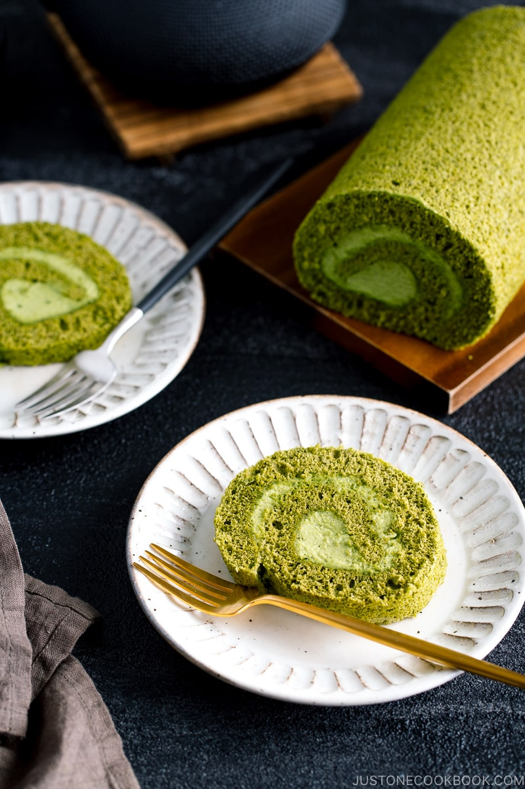

Matcha Swiss Roll (Roll Cake)

Matcha Swiss Roll is a fluffy sponge cake with a swirl of fresh matcha cream rolled in the middle. Light, creamy, and mildly sweet, it's a delicious afternoon snack or post-dinner dessert that you can enjoy with a cup of coffee or tea. With its festive vibrant color from the green tea powder, this roll cake will be an instant favorite for any celebration, too.
Swiss Rolls, or Roll Cakes (ロールケーキ) which we call in Japan, are a type of sponge cake filled with whipped cream, buttercream, and custard cream, and sometimes include fruits like strawberries.
Just like any other dessert, we do have Matcha Swiss Roll (抹茶ロールケーキ) and it' s always a popular choice in Japan. If you have a soft spot for anything matcha (green tea), I am pretty sure you're going to be as obsessed with this cake as I am.
Ingredients
- 4 large eggs (50 g each w/o shell)
- 90 g cake flour (if you're using a cup measurement, please follow this method; otherwise, you may scoop more flour than you need; 1 cup is about 120 g; you can make homemade cake flour)
- ½ tsp baking powder
- 12 g matcha (green tea powder)
- 100 g sugar (divided)
- 30 ml whole milk (microwave until warm to the touch)
- For the Matcha Cream Filling
- 180 ml heavy (whipping) cream (36% or more milkfat) (chilled)
- 26 g sugar
- 4 g matcha (green tea powder)
Instructions
- Before You Start: Please note that the total time does not include 30 minutes of resting time and 2 hours of chilling time.
- Gather all the ingredients. Preheat the oven to 375ºF (190ºC). For a convection oven, reduce the cooking temperature by 25ºF (15ºC). Line a 15-inch x 10-inch (38 cm x 25 cm) jelly roll pan with parchment paper.
- Separate the egg yolks and whites into two bowls. Keep the egg whites in the refrigerator and the egg yolks at room temperature.
To Make the Cake Batter
- Prepare a work surface with a sheet of parchment paper. To a fine-mesh sieve, add the cake flour, baking powder, and matcha powder. Sift these dry ingredients onto the parchment paper.
- Use the parchment paper to transfer the dry ingredients to a bowl. Repeat sifting and transferring the dry ingredients two more times (for a total of three times). Set aside. Tip: Matcha is a very fine powder that' s difficult to blend into a batter without clumping. Sifting the dry ingredients three times ensures that the matcha and flour are well blended with no lumps and that air is incorporated into the mixture so it making it easier to blend into the batter.
- In a large bowl, add the egg yolks and break them with a hand whisk.
- Add half of the sugar (¼ cup, 50 g for one cake) and whisk until the egg mixture doubles in volume. When you lift the whisk into the air with some of the mixture on it, the mixture should fall back into the bowl in ribbons, which slowly disappear back into the mixture.
- Next, add the cold egg whites to a large, dry bowl. With an electric hand mixer (or stand mixer), beat the egg whites until foamy.
- Gradually add the remaining sugar (¼ cup, 50 g for one cake), one-third at a time, and beat until stiff peaks form and the egg whites are glossy.
- Using a hand whisk, gently fold about one-third of the egg whites into the egg yolk mixture until well incorporated.
- Then, add the egg yolk mixture back into the bowl with remaining the egg whites. Gently fold in the egg whites with a silicone spatula until just incorporated. Tip: Rotate the bowl a quarter turn counterclockwise while you scoop up and fold the mixture onto itself clockwise.
- Next, add the dry ingredients to the egg mixture. Using the silicone spatula, fold in gently until just incorporated. Do not overmix. Tip: Adding the dry ingredients last avoids overmixing, which results in a dense (not fluffy) sponge.
- Add the warm milk to the batter and fold it in until incorporated.
To Bake
- Pour the batter into the prepared pan. Spread the batter evenly using an offset spatula or silicone pastry scraper.
- Tap the jelly roll pan a few times on your working surface to remove any air pockets in the batter. Transfer the pan to the preheated oven and bake for 10-12 minutes, or until an inserted toothpick comes out clean and the top of cake springs back when touched. Tip: Do not overbake it or the cake will be too dry and break when you roll it.
- Remove the pan from the oven and drop the pan on your working surface once to prevent the cake from shrinking.
To Remove the Cake from the Pan
- While the pan is still hot, place a sheet of parchment paper across the surface of the cake. Place a baking sheet (or a cutting board) on top with the bottom of the pan against the paper.
- Wearing oven mitts, hold the two baking sheets together with the cake sandwiched in between and flip them over. Using a knife or spatula, lift the jelly roll pan to reveal the cake.
- Gently peel off the parchment paper attached to the cake. This side will be the exterior of the Swiss roll, so be gentle!
- Now, flip over the cake one more time: Place another “protective” sheet of parchment paper across the cake surface, then place a baking sheet on top with the bottom of the pan against the paper.
- Hold both baking sheets together and flip them over so the brown side of the cake is now facing up. Remove the top pan and parchment paper.
- Remove the bottom baking sheet and place the cake with its parchment paper on a work surface. Slicing at an angle, cut off ½ inch (1.3 cm) of the cake from one of the short ends. This will help stabilize the Swiss roll when rolled up.
- While it's still warm, roll the cake: Start at the other short end and use your hands to slowly roll up the cake together with its parchment paper, finishing at the angled end that you just sliced. Once the cake and paper are rolled up, transfer to a wire rack with the seam side down.
- Cover with a kitchen towel to keep it secure and let it cool completely until it reaches room temperature, about 30 minutes.
To Prepare the Matcha Cream Filling
- When the cake is completely cool, combine the heavy cream, sugar, and matcha powder in a large bowl.
- Beat with an electric hand mixer (or stand mixer) until firm and spreadable, so it won' t ooze out of the cake when you' re rolling it up.
To Assemble the Swiss Cake
- Transfer the Swiss roll to a flat surface and unroll the cake. It' s okay if the ends curl up a bit.
- Using an offset spatula, spread the matcha cream filling evenly over the cake, leaving a ½-inch (1.3 cm) border on all sides. Tip: Spread slightly less filling toward the last one-third of the cake, as the cream will pile up toward the end when rolling up.
- Carefully but tightly reroll the cake with the filling inside. End with the seam side on the bottom. Secure the cake by rolling it in the parchment paper and twisting it at both ends, like a candy wrapper. Refrigerate for at least 2 hours to firm up the cream.
- Remove and unwrap the Swiss roll. Slice off about ½ inch (1.3 cm) of the cake on both ends to show off the beautiful swirls. Transfer it to your serving dish. Slice and serve.
To Store
- If you have leftovers, just rewrap the Swiss roll in plastic wrap and store in the refrigerator for up to 3 days.